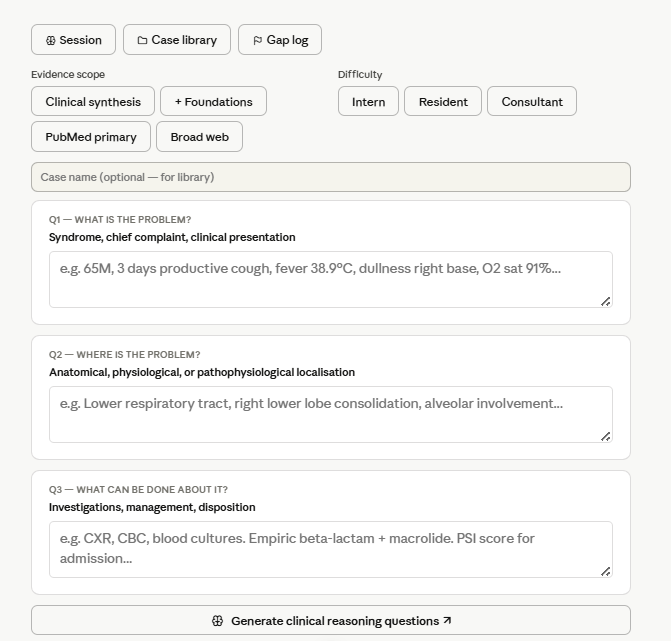

Definition
Vibe Rounds is AI-augmented clinical care — where a doctor commands a multimodal AI in natural language, at the bedside, in real time. Speak. Point. Show. Get answers.
What is Vibe Rounds?
Just as Vibe Coding lets developers build software through natural language and intuition, Vibe Rounds brings the same paradigm to clinical medicine. A doctor doesn't type into a form or navigate menus — they speak, gesture, and show. The AI responds in real time, augmenting clinical judgment without replacing it.
Not AI replacing doctors. AI giving doctors the cognitive bandwidth to be their best — at 3 AM, on the 12th hour of a shift, for every patient.
"The best version of every clinician, at every hour, for every patient."
At the Bedside, Right Now
Instant cross-reference across all active medications.
Multimodal AI analysis: wound staging, infection risk, dressing recommendation.
Done in 30 seconds. Review, edit, sign.
Evidence-linked differentials, ranked by probability, with citation.
Why Now
Three forces converged in 2025–26 to make Vibe Rounds possible for the first time:
Multimodal LLMs reaching clinical grade
Large language models can now process text, images, audio, and video simultaneously — the same inputs a doctor uses at the bedside.
Global digital health infrastructure coming of age
From interoperable health records in the EU and FHIR adoption in the US, to national digital health missions across Asia and Africa, the world is building the data infrastructure that Vibe Rounds can plug into — making AI-augmented care accessible at every level of the health system, not just in elite hospitals.
The Vibe Coding paradigm shift
Andrej Karpathy's coining of Vibe Coding proved that natural language as an interface unlocks entirely new classes of users. Clinicians are next. Vibe Rounds is the healthcare derivative.
Introduction
Generated with NotebookLM ·
Proccess
The Vibe Rounds Clinical Reasoning Template is a structured AI-augmented thinking scaffold designed for use at the bedside, in simulation, and during self-directed learning. It operationalises the three foundational questions of clinical medicine into an interactive framework where the clinician's own answers drive AI-generated Socratic follow-up questions.
Rather than replacing clinical judgement, the tool acts as a brilliant attending in your pocket — one that reads your reasoning and immediately asks what you may have missed, assumed, or oversimplified.
Action
65-year-old pneumonia case, visually showing how the "What/Where/Do" template captures the clinician's initial reasoning while the AI identifies critical gaps.
Interfaces

Action
Warning, blood and real hospital case images. Disclaimer - all data deidentified and with consent.
Read & Cite
Published & Referenced At
Collaborate or Write About Vibe Rounds
Are you a clinician, researcher, journalist, or health-tech builder? Reach out to discuss collaboration, citation, or media enquiries.